实际部署：容器、程序和模型分别在哪里
先看四个执行位置

A负责启动和组织任务；B管理临时sandbox；C只负责模型推理。ReAct循环在A，Claude/Mini循环在任务sandbox。图中没有训练器或参数更新。
本地正式评测的整体架构
下图对应28题正式SWE评测的运行时结构。A和C使用同一种vLLM ROCm基础镜像，但它们是两个独立容器。 B使用Docker DinD镜像，里面的任务sandbox使用各题的SWE-bench镜像。

{kind=link}
外层容器和内层任务容器
| 对象 | 本次名称/实现 | 装了什么、运行什么 | 生命周期 |
|---|---|---|---|
| CPU编排容器A | ua-lab-cpu |
Uni-Agent源码、Python环境、Docker客户端；评测作业与Gateway运行在这里 | 容器可长期保留，具体评测脚本会退出 |
| 模型服务容器C | 主实验为ua-lab-model-128k |
vLLM加载本地Qwen30B，在GPU上推理 | 实验期间常驻 |
| sandbox daemon容器B | ua-lab-sandbox-daemon |
独立dockerd、独立镜像/容器存储 | 实验期间常驻 |
| 任务sandbox | uni-agent-<随机ID> |
当前题目仓库、依赖、命令进程；选Claude/Mini时还运行该CLI | 每题动态创建，完成后销毁 |
| 判题sandbox | 另一份新建的任务镜像实例 | 应用保存的候选改动，运行官方测试 | 每次判题独立创建/销毁 |
| 租约回收容器 | ua-lab-janitor |
定期按owner和TTL检查专用daemon中的容器 | 独立于评测worker常驻 |
外层Docker负责启动A、B、C；B里面的dockerd创建和管理任务sandbox。因此，宿主机普通 docker ps主要看到外层服务容器；看内层任务，应连接专用socket。
“看不到Uni-Agent镜像”的原因
本次没有拉取一个叫 verl-project/uni-agent 的镜像。这个名称是源码仓库地址。
CPU容器从vLLM ROCm镜像启动后，把宿主实验目录挂为/lab，再将 /lab/src/uni-agent 以editable Python包安装到 /lab/envs/cpu。镜像名仍显示 vllm/vllm-openai-rocm:nightly，容器里执行的程序可以是Uni-Agent。
| 概念 | 具体位置 |
|---|---|
| 宿主实验根目录 | /home/yuhanya/uni-agent-lab |
| CPU容器内挂载点 | /lab |
| Uni-Agent源代码 | /lab/src/uni-agent/uni_agent |
| CPU Python解释器 | /lab/envs/cpu/bin/python |
| 正式实验入口 | /lab/scripts/run_swe.py --gateway ... |
| 官方小样本入口 | /lab/src/uni-agent/examples/inference/parallel_infer_api.py |
Agent具体在哪里
- ReAct：主循环在A中。Uni-Agent用模型回复生成工具调用，把shell/编辑操作送到当前题目的sandbox。
- Claude Code：A中的Uni-Agent适配器通过Docker exec，在当前sandbox内启动真实Claude CLI。Claude自己的循环和本地工具都在那里运行。
- Mini：同样由A中的适配器启动，主循环位于sandbox内。
Claude二进制、Mini的portable Python和依赖提前准备到宿主实验缓存中，创建sandbox时只读挂载。没有每题重新下载或安装完整harness，也没有再额外创建一层“agent专用容器”。
远端E2B补充实验
这条实验与本地正式评测分开。模型仍在本地GPU上；远端仅承担工具执行与文件状态。

这里的ReAct直接调用vLLM /v1/chat/completions，没有经过Uni-Agent Gateway。 E2B适配器将工具操作转换为SDK请求。该实验完成区间合并函数修复及10项测试，不包含远端SWE-bench、Claude Code或Mini。
哪些东西不在图中
训练器、梯度、优化器、训练权重同步没有运行，因此不画成已部署的数据流。性能实验使用的TP1/TP4/AITER/双副本，是模型服务C的不同配置与实例，见性能实验，没有中途替换正式28题使用的模型服务。